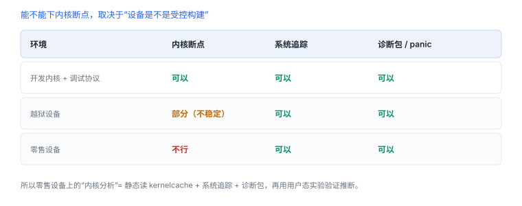

内核调试的限制与替代
零售设备没有内核断点，只有事后证据与间接观测
iOS 的内核调试需要 Apple 提供的开发内核与调试链路，零售设备上不存在这条通道。能做的只有三件事：读 kernelcache、看诊断包、从用户态行为反推。
1. 三种环境
| 环境 | 内核断点 | 前提 |
|---|---|---|
| 开发内核 + 调试协议 | 可以 | Apple 提供的开发镜像与受支持设备 |
| 越狱设备 | 部分可以 | 内核补丁 + 调试器，稳定性差 |
| 零售设备 | 不行 | 无调试通道 |
“不行”不是配置问题：调试通道可读写任意物理内存，等于绕过所有用户态保护，所以只在受控构建上开放。
2. 替代观测面
| 手段 | 能得到什么 | 限制 |
|---|---|---|
| kernelcache 静态分析 | 函数结构、判定逻辑、字符串 | 需解包与符号恢复 |
| 系统诊断包 | 内核日志、panic 记录、进程快照 | 事后，粒度粗 |
| 系统追踪 | 系统调用、调度、I/O 事件 | 开销大，窗口短 |
| 用户态观测 | 错误码、时序、行为差异 | 只能推断 |

3. 命令形态
用系统追踪观察自有应用（macOS 侧）
xcrun xctrace list templates | grep -i "System Trace"
xcrun xctrace record --template "System Trace" --time-limit 5s \
--output /tmp/sys.trace --launch -- /path/to/YourApp.app/Contents/MacOS/YourApp收集诊断包（设备侧触发后导入）
# 设备上触发 sysdiagnose 后，把包导入本机
ls ~/Library/Logs/CrashReporter/MobileDevice/ | tail
log show --last 10m --predicate 'process == "YourApp"' | head -504. 一次内核相关排障
- 用户态出现权限错误，先确认错误码与调用栈。
- 拉诊断包，对齐同一时间点的内核日志与进程状态。
- 在 kernelcache 里定位对应判定函数，看分支条件。
- 用公开源码对照逻辑，标注“模型”与“事实”。
- 回到设备构造可复现条件，验证推断。
5. 失败分流
| 现象 | 原因 | 查哪里 |
|---|---|---|
| 提示无法连接内核 | 零售设备无调试通道 | 设备与构建类型 |
| 诊断包里没有内核日志 | 日志级别或保留策略 | 收集方式与时间窗 |
| panic 无法符号化 | 缺少对应内核符号 | 按版本匹配 kernelcache |
| 推断与实测不符 | 公开源码与设备构建差异 | 以设备行为为准并记录差异 |
别把“可观测”当“可调试”
系统追踪能看到系统调用与调度事件，但看不到内核内部变量；想验证“某个判定为什么失败”，最终仍要靠 kernelcache 的静态阅读与用户态实验。
系统追踪能看到系统调用与调度事件，但看不到内核内部变量；想验证“某个判定为什么失败”，最终仍要靠 kernelcache 的静态阅读与用户态实验。
6. 一次真实排查记录：诊断包里没有内核日志
- 现象：按流程触发了诊断包，却找不到内核相关记录。
- 先看时间窗：诊断包只保留最近一段，问题发生太久就已被覆盖。
- 再看采集方式：部分日志需要更高的采集级别才会落盘。
- 替代路径：改用系统追踪复现一次，或从 panic 记录反推。
- 结论与限制：记录“证据未被保留”，并注明这类结论只能标为推断。
“没有日志”本身也是证据：它说明当时的采集配置不足以支撑这个结论。
7. 工程权衡：三种替代手段怎么选
| 手段 | 能得到 | 适合 |
|---|---|---|
| kernelcache 静态阅读 | 判定逻辑与分支条件 | 解释“为什么会拒绝” |
| 系统追踪 | 调用与调度时间线 | 解释“慢在哪、谁先谁后” |
| 诊断包 | 事后状态与 panic 记录 | 解释“当时发生了什么” |
三者回答不同问题：静态说“规则是什么”，追踪说“顺序是什么”，诊断说“现场是什么”。混用会得到看似完整、实则无法验证的结论。
8. 自测
- 为什么内核调试通道只在受控构建上开放？
- 零售设备上，哪三类证据可以替代内核断点？
- “开发内核行为”为什么不能迁移到量产设备？
- panic 分析与普通崩溃在证据来源上有什么不同？